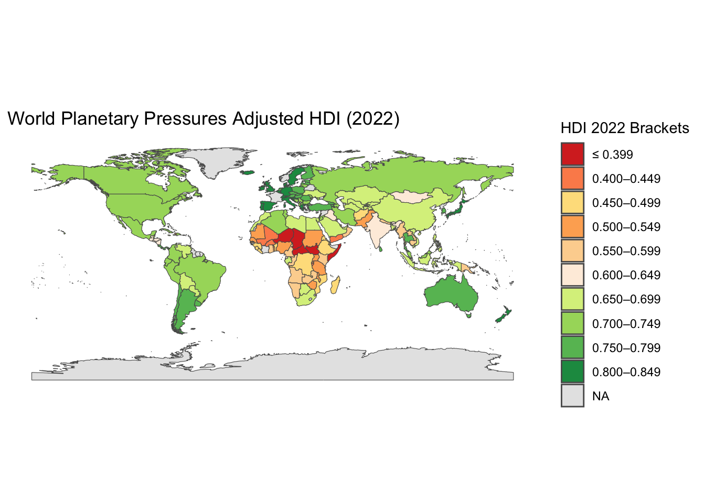
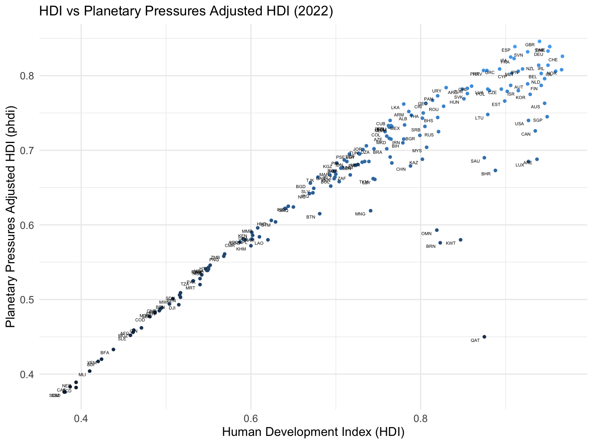

The goal of planetaryhdi is to make data provide a cleaned datasets of planetary pressures-adjusted HDI Index for all countries.
Installation
You can install the development version of planetaryhdi from GitHub with:
# install.packages("devtools")
devtools::install_github("openwashdata/planetaryhdi")
## Run the following code in console if you don't have the packages
## install.packages(c("dplyr", "knitr", "readr", "stringr", "gt", "kableExtra"))
library(dplyr)
library(knitr)
library(readr)
library(stringr)
library(gt)
library(kableExtra)Alternatively, you can download the individual datasets as a CSV or XLSX file from the table below.
- Click Download CSV. A window opens that displays the CSV in your browser.
- Right-click anywhere inside the window and select “Save Page As…”.
- Save the file in a folder of your choice.
| dataset | CSV | XLSX |
|---|---|---|
| planetaryhdi | Download CSV | Download XLSX |
Data
The package provides access to Planetary pressures-adjusted HDI Index for all countries and UNDP defined sub-region in one dataset.
planetaryhdi
The dataset has 210 observations and 12 variables
planetaryhdi |>
head(3) |>
gt::gt() |>
gt::as_raw_html()| hdi_rank | country | hdi | phdi | pct_diff_hdi | rank_diff_hdi | adj_factor | tco2_per_capita_prod | co2_emissions_index | material_footprint_per_capita | material_footprint_index | iso3c |
|---|---|---|---|---|---|---|---|---|---|---|---|
For an overview of the variable names, see the following table.
| variable_name | variable_type | description |
|---|---|---|
| hdi_rank | numeric | Rank by HDI |
| country | character | Name of the country |
| hdi | numeric | Human Development Index (HDI): A composite index measuring average achievement in three basic dimensions of human developmenta long and healthy life, knowledge and a decent standard of living. See Technical note 1 at http://hdr.undp.org/sites/default/files/hdr2023_technical_notes.pdf for details on how the HDI is calculated. |
| phdi | numeric | Planetary pressures-adjusted HDI (PHDI): HDI value adjusted by the level of carbon dioxide emissions and material footprint per capita to account for the excessive human pressure on the planet. It should be seen as an incentive for transformation. See Technical note 6 at http://hdr.undp.org/sites/default/files/hdr2023_technical_notes.pdf for details on how the PHDI is calculated. |
| pct_diff_hdi | numeric | Percentage Difference in HDI and Planetary HDI (caluclated as: [HDI - PHDI] / HDI) |
| rank_diff_hdi | numeric | Difference in rank between PHDI and HDI. Expressed as Rank(phdi) - Rank(hdi) |
| adj_factor | numeric | Adjustment factor for planetary pressures: Arithmetic average of the carbon dioxide emissions index and the material footprint index, both defined below. A high value implies less pressure on the planet. |
| tco2_per_capita_prod | numeric | Carbon dioxide emissions per capita (production): carbon dioxide emissions produced as a consequence of human activities (use of coal, oil and gas for combustion and industrial processes, gas flaring and cement manufacture), divided by midyear population. Values are territorial emissions, meaning that emissions are attributed to the country in which they physically occur. |
| co2_emissions_index | numeric | Carbon dioxide emissions (production) index: Carbon dioxide emissions per capita (production-based) expressed as an index using a minimum value of 0 and a maximum value of 76.61 tonnes per capita. A high value of this index implies less pressure to the planet. |
| material_footprint_per_capita | numeric | Material footprint per capita: Material Footprint (MF) is the attribution of global material extraction to domestic final demand of a country. The total material footprint is the sum of the material footprint for biomass, fossil fuels, metal ores and non-metal ores. This indicator is calculated as raw material equivalent of imports (RMEIM) plus domestic extraction (DE) minus raw material equivalents of exports (RMEEX). Per-capita MF describes the average material use for final demand. |
| material_footprint_index | numeric | Material footprint index: Material footprint per capita expressed as an index using a minimum value of 0 and a maximum value of 140.82 tonnes per capita. A high value of this index implies less pressure to the planet. |
| iso3c | character | ISO 3166-1 alpha-3 country code} |
Example
Planetary Pressures Adjusted HDI Index for all countries
library(planetaryhdi)
library(ggplot2)
library(rnaturalearthdata)
library(rnaturalearth)
library(dplyr)
# 2022 HDI worldwide
world <- ne_countries(scale = "medium", returnclass = "sf")
# Check that planetaryhdi has the necessary columns
if(!all(c("iso3c", "phdi") %in% colnames(planetaryhdi))) {
stop("planetaryhdi must have columns 'iso3c' and 'phdi'.")
}
# Join the world data with the planetaryhdi data
world_map_data <- world |>
left_join(planetaryhdi, by = c("iso_a3" = "iso3c"))
# Handle any NA values that might have been introduced by the join
world_map_data$phdi[is.na(world_map_data$phdi)] <- NA
# Define HDI color palette
hdi_colors <- c("#d73027", "#fc8d59", "#fee08b", "#fdae61", "#fdd49e", "#feedde",
"#d9ef8b", "#a6d96a", "#66bd63", "#1a9850", "#00441b", "#003300", "#001a00",
"#e0e0e0")
# Plot the map
ggplot(data = world_map_data) +
geom_sf(aes(fill = cut(phdi,
breaks = c(-Inf, 0.399, 0.449, 0.499, 0.549, 0.599, 0.649, 0.699,
0.749, 0.799, 0.849, 0.899, 0.950, Inf),
labels = c("≤ 0.399", "0.400–0.449", "0.450–0.499", "0.500–0.549",
"0.550–0.599", "0.600–0.649", "0.650–0.699",
"0.700–0.749", "0.750–0.799", "0.800–0.849",
"0.850–0.899", "0.900–0.950", "≥ 0.950")))) +
scale_fill_manual(values = hdi_colors, na.value = "gray90", name = "HDI 2022 Brackets") +
theme_minimal() +
labs(title = "World Planetary Pressures Adjusted HDI (2022)") +
theme(axis.text = element_blank(),
axis.ticks = element_blank(),
panel.grid = element_blank())
Effects of Adjusting HDI with planetary pressures
library(planetaryhdi)
library(ggplot2)
# Ensure the dataset has the necessary columns (hdi and phdi)
if(!all(c("iso3c", "hdi", "phdi") %in% colnames(planetaryhdi))) {
stop("planetaryhdi must have columns 'hdi' and 'phdi'.")
}
# Create the scatter plot
ggplot(planetaryhdi, aes(x = hdi, y = phdi, label = iso3c)) +
geom_point(aes(color = phdi), size = 1) + # Points colored by phdi values
geom_text(aes(label = iso3c), hjust = 1.5, vjust = 1.5, size = 1.5) + # Labels for countries
theme_minimal() +
labs(title = "HDI vs Planetary Pressures Adjusted HDI (2022)",
x = "Human Development Index (HDI)",
y = "Planetary Pressures Adjusted HDI (phdi)") +
theme(axis.text = element_text(size = 10), # Adjust axis text size
axis.title = element_text(size = 12), # Adjust axis title size
legend.position = "none") # Remove the legend
License
Data are available as CC-BY.
Citation
Please cite this package using:
citation("planetaryhdi")
#> To cite package 'planetaryhdi' in publications use:
#>
#> Dubey Y (2024). _planetaryhdi: What the Package Does (Title Case)_. R
#> package version 0.1.0,
#> <https://github.com/openwashdata/planetaryhdi>.
#>
#> A BibTeX entry for LaTeX users is
#>
#> @Manual{,
#> title = {planetaryhdi: What the Package Does (Title Case)},
#> author = {Yash Dubey},
#> year = {2024},
#> note = {R package version 0.1.0},
#> url = {https://github.com/openwashdata/planetaryhdi},
#> }